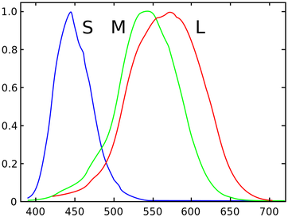
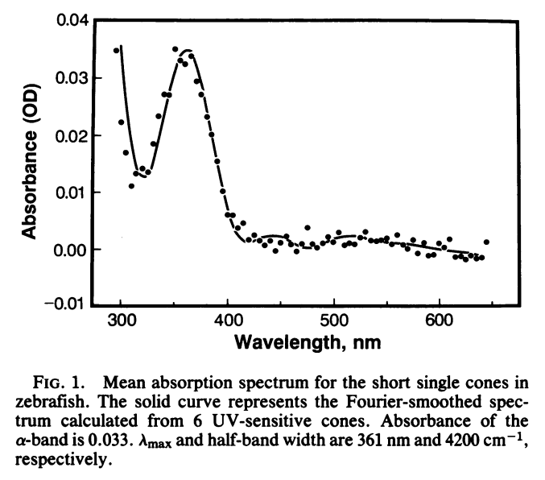
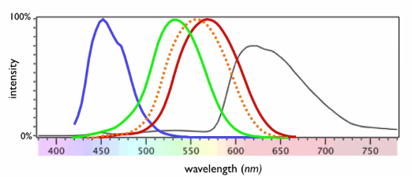
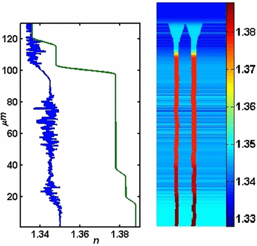

本文不是纯正的科学，其中幻想与科学混杂，请勿用于科学参考。
人类的视觉
人感受颜色是通过视锥细胞来实现的，三种视锥细胞为 L 型（长波段，红色），M 型（中间波段，绿色），S 型（短波段，蓝色段）。顺便一只人眼中大约有六七百万的视锥细胞。

仔细的说来，通过视锥细胞里面的三种不同的蛋白质来响应不同的波段的光信号。然后信号被传递到大脑中，经过复杂的过程，才形成了我们的视觉。
从数学上来看，视网膜所做的，是进行零散的傅里叶展开：使用 L，M，S 三组颜色完备基矢来展开光信号。例如某种与位置和时间有关的信号落在视网膜上。我们的视网膜对光信号做了如下处理：
这里面 $r$, $\theta$ 是用来指定在视网膜上的位置的， $\lambda$ 是波长。也就是说除了偏振以外的所有的光信息可以看做一个光谱，与视网膜上的位置有关，并且随着时间变化。使用 L，M，S 三组基矢我们把这个光信息展开了。
然而这是不完备的展开，仅仅是在三色颜色空间的展开。这就意味着光谱信息的缺失，因为相当于我们用一个网格很大的过滤器过滤沉淀，结果由于网格太大，很多需要过滤出来的东西都掉下去了。严格来说，我们需要的是一个连续的傅里叶展开。
实际上视觉处理非常复杂，其中所蕴含的窍门也很多。例如人类处理视觉信息的时候会将图像分解成亮暗条纹的方式来节约计算资源。
如果人的眼睛中除了处理三种波段的细胞，还有另外的处理其他种类的视锥细胞，例如有能够感受紫外线的视细胞，那么可以感受更复杂的视觉。
一个例子是四色型视觉（tetrachromacy）。鲫鱼和斑马鱼具有四色型视觉，他们除了能够感受人能感受到的红绿蓝之外，还能感受到紫外波段。另外的例子是某些鸟类，例如斑胸草雀，可以看到紫外，波长短至 300 纳米。既然谈到了四色型视觉，那么五色型视觉呢？六色型视觉呢？

人类的四色型视觉
实际上有人类四色型视觉的案例。Gabriele Jordan 的一个具有四种不同光视蛋白的实验对象可以感受比我们正常的三色型视觉的人更多的颜色，这是一位真正的四色型视觉1。
在此之前，实验对象中很多具有四种不同的光视蛋白，比我们多，但是他们不能发挥作用，并不是真正的四色型视觉。这是因为在人的身上，即便我们有了响应第四种波段光的细胞，这个信号需要递给大脑皮层，大脑皮层需要正确地给出响应。并不是有了新的感光细胞就可以用的。可是作为一篇脑洞文，只能说不要在意细节。
正如上面所说，有些人可能是潜在的四色型视觉，他们可能比正常人多出一类细胞即 L’ 型，可以感受红绿之间的一个波段。

传奇画家
达达奇是文艺复兴时期一名具有四色型视觉的画家。他在自己的一副绘画中隐藏了只有四色型视觉才能看到的秘密，而普通人只能看到一幅著名的风景画。在之后的几百年中，达达奇的后人一直保留着这幅画，但是从某一代之后就不再有四色型视觉，这之后的后代就不再能看到这个秘密。然而某科学狂人无意间看到这幅正在展出赚钱的画，发现了这个秘密。于是……
等等，我们不是在讲故事。我们只是要科学地脑洞一下。
所以，达达奇是自然突变的。那么科学狂人是怎么看到的呢？
一个可能的脑洞是：使用干细胞，敲掉原来的相关视蛋白基因，换上新的蛋白对应的基因，培养成视锥细胞，最后植入视网膜（替换原来某些视锥细胞）2。
于是他就这么做了。
可控制谱段的视觉
上面脑洞不够大，我们在寻找更加强大的超人。
倘若我们的光感受器中的蛋白的响应谱段是可以通过离子浓度（或其他手段）来调节的3，这样我们可以控制我们眼睛中的光感受器的响应频段，从而有控制的看到其他的谱段。
例如我们可以降低溶液浓度来使得蛋白质的敏感谱段像红端移动，这样我们就可以在夜晚需要活动的时候调节到这个模式，从而看到红外的光谱。
谁让你从背后袭击武林高手的
武林高手令狐冲坐在野店的小桌前喝酒，有个黑道上的想要从背后下手。令狐冲头也没回，反手一把抓住了黑道兄弟手中的弹簧刀，只用内力一震，刀便径直插在了远处的树干上。
视网膜的内壁某些可以放一些感受红外波段的细胞，如果身边的红外热源突然发生变化，就可以感受到这种变化。从而判断物体的运动。
由于红外波长较长，假如有人从背后接近令狐冲，令狐冲这部分细胞会感受到有个热源越来越强，说明在靠近自己，这样他就知道，俺背后有人！
偷袭武林高手，那是自作孽。
充分利用眼球内壁
人的眼睛中存在一种 Muller 细胞，这种细胞可以起到光波导的作用。

我们可以设想这样一种人眼，视网膜整个内壁都是视细胞并且与视神经相连，在这些光波导的某些地方使用“分光镜”，将光线部分导入到视网膜的其他地方。（还有一部分用来观测光在眼球内的散射从而判断信息。）
而这些其他地方的视细胞或许有特殊性，例如可以探测其他波段的信息。这样大脑皮层视觉区可以有一部分专门处理这个。平时我们并不会用到，但是如果在这些波段出现了异常，我们可以感受到，并且专注在这些波段。
偏振
有的复眼可以看到偏振4。偏振用处很大，通过调节偏振，我们可以消除影响我们视觉的反射光等等。
致谢
感谢果壳水群中的各位提供的脑洞支持，特别是 @飘飘 提供的干细胞思路极大的帮助我这个外行完成了这篇脑洞。
注释
-
Jordan, G.; Mollon, J. D. (1993). “A study of women heterozygous for colour deficiencies”. Vision research 33 (11): 1495–1508. ↩
-
然而正如前文所述，这仅仅解决了探测器的问题，我们还需要解决信号的传输和处理。倘若新植入的视锥细胞的信号是单独处理并且送往大脑皮层，那么视觉信息的处理会很混乱。最好的情况是，新的信息像 L，M，S 一样具有一定的独立性。这样假定大脑能够处理的话，就可以得到更加详细的频谱信息。 ↩
-
蛋白质构型是取了在某个环境中的能量（自由能）极值点，改变溶液可以改变周围电势能的分布，如此改变蛋白质构型的可能性也不是没有的。或者简单的模仿细胞膜上的离子通道。 ↩
-
R. Völkel, M. Eisner, K.J. Weible, Miniaturized imaging systems, Microelectronic Engineering, Volumes 67–68, June 2003, Pages 461-472, ISSN 0167-9317, DOI: 10.1016/S0167-9317(03)00102-3. ↩